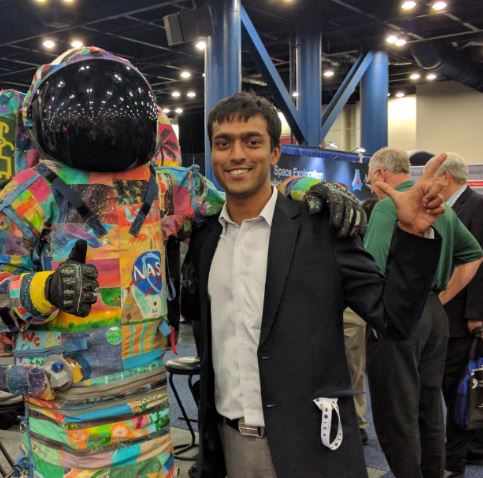

Culture & Craziness on Bit Ships
Come you lost Atoms to your Centre draw.
And be the Eternal Mirror that you saw.
Rays that have wander'd into Darkness wide.
Return and back into your Sun subside
My journey has taken me
Through halls of academia 🎓
And trenches of problem-solving 🤔💻
Craft honed to an art form 🎨
But when coding's done
I turn to books and stories 📚
Philosophy and science fiction 🤔🚀
A world of literary glories 🌎📖
And when not lost in words
I venture out to new lands 🌍🧭
Exploring different cultures 🗺️🌍
Finding lost roads again 🛣️👀
Through halls of academia 🎓
And trenches of problem-solving 🤔💻
Craft honed to an art form 🎨
But when coding's done
I turn to books and stories 📚
Philosophy and science fiction 🤔🚀
A world of literary glories 🌎📖
And when not lost in words
I venture out to new lands 🌍🧭
Exploring different cultures 🗺️🌍
Finding lost roads again 🛣️👀